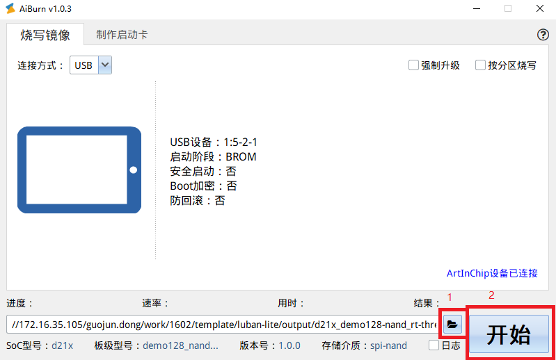

配置烧录镜像
16 May 2025
Read time: 1 minute(s)
Luban-Lite SDK 编译的最终输出结果是一个用于烧录到目标平台的镜像文件。
工具 |
说明 |
|---|---|
AiBurn |
用于通过 PC 烧录镜像。
|
串口调试工具 |
用于通过命令行进入烧录模式、查看烧录、启动状态。
|
执行下列流程，烧录镜像文件：
-
打开 AiBurn ，进入烧写镜像页面：

-
选择以下任意方式，使板卡进入烧录模式：
-
板卡上电前，按住开发板上的 UBOOT 键不放，再上电。
-
板卡上电前，短接 SPI Flash 的 4、5 引脚，再上电。
-
板卡上电前，拉低烧录引脚（SDK 中，默认为 PA0），再上电。
-
板卡上电后，按住开发板上的 UBOOT 键不放，再按 RESET 键。
-
在 RT-Thread 启动之后，在串口命令行输入 aicupg。
-
-
进入烧录模式后， AiBurn 会识别板卡，当右下角出现 ArtInChip 设备已连接，表示成功进入烧录模式，如图所示。
-
选择编译好的镜像文件。加载镜像时， AiBurn 会识别出镜像的基本信息。
-
点击开始，进行烧录。烧录时，AiBurn 会显示烧录的进度、速率、用时、结果。
